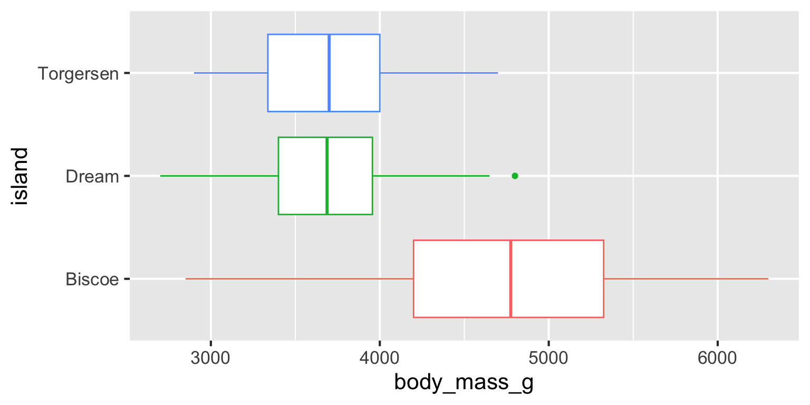

Linear regression with a categorical predictor
Modeling and inference
Packages, data, variables
Packages
- palmerpenguins for data
- tidyverse for data wrangling and visualization
- tidymodels for modeling
Data: penguins
We’ll work with the penguins dataset from the palmerpenguins package, which contains information on body measurements of three species of Antarctic penguins:
penguins# A tibble: 344 × 7
species island bill_length_mm bill_depth_mm
<fct> <fct> <dbl> <dbl>
1 Adelie Torgersen 39.1 18.7
2 Adelie Torgersen 39.5 17.4
3 Adelie Torgersen 40.3 18
4 Adelie Torgersen NA NA
5 Adelie Torgersen 36.7 19.3
6 Adelie Torgersen 39.3 20.6
7 Adelie Torgersen 38.9 17.8
8 Adelie Torgersen 39.2 19.6
9 Adelie Torgersen 34.1 18.1
10 Adelie Torgersen 42 20.2
# ℹ 334 more rows
# ℹ 3 more variables: flipper_length_mm <int>,
# body_mass_g <int>, sex <fct>Variables
A researcher wants to study the relationship between body weights of penguins based on the island they were recorded on. How are the variables involved in this analysis different?
. . .
- Outcome: body weight (numerical)
- Predictor: island (categorical)
Body weight vs. island
Determine whether each of the following plot types would be an appropriate choice for visualizing the relationship between body weight and island of penguins.
Scatterplot ❌
Box plot ✅
Violin plot ✅
Density plot ✅
Bar plot ❌
Stacked bar plot ❌
Body weight vs. island
ggplot(
penguins,
aes(x = body_mass_g, y = island, color = island)
) +
geom_boxplot(show.legend = FALSE)Warning: Removed 2 rows containing non-finite outside the scale
range (`stat_boxplot()`).
Modeling
Fitting the model
- Fit:
bm_island_fit <- linear_reg() |>
fit(body_mass_g ~ island, data = penguins). . .
- Tidy:
tidy(bm_island_fit)# A tibble: 3 × 5
term estimate std.error statistic p.value
<chr> <dbl> <dbl> <dbl> <dbl>
1 (Intercept) 4716. 48.5 97.3 8.93e-250
2 islandDream -1003. 74.2 -13.5 1.42e- 33
3 islandTorgersen -1010. 100. -10.1 4.66e- 21Inspecting the model output
Why is Biscoe not on the output?
# A tibble: 3 × 5
term estimate std.error statistic p.value
<chr> <dbl> <dbl> <dbl> <dbl>
1 (Intercept) 4716. 48.5 97.3 8.93e-250
2 islandDream -1003. 74.2 -13.5 1.42e- 33
3 islandTorgersen -1010. 100. -10.1 4.66e- 21. . .
When fitting a model with a categorical predictor, the levels of the categorical predictor are encoded to dummy variables, except for one of the levels, the baseline level.
In this case Biscoe is the is the baseline level.
Each slope coefficient describes the predicted difference between heights in that particular school compared to the baseline level.
Dummy variables
| island |
Dummy variable
|
|
|---|---|---|
| Dream | Torgersen | |
| Biscoe | 0 | 0 |
| Dream | 1 | 0 |
| torgersen | 0 | 1 |
For a categorical predictor with \(k\) levels, we only need \(k - 1\) dummy variables to describe all of its levels:
-
Dream = 1andTorgersen = 0, the penguin is from Dream island. -
Dream = 0andTorgersen = 1, the penguin is from Torgersen island. -
Dream = 0andTorgersen = 0, the penguin is from Biscoe island, we don’t need a third dummy variable to identify these penguins.
Dummy coding
You do not need to do anything (i.e., write code) to do the “dummy coding”, R does this under the hood for you when you have a predictor that is categorical (a character or a factor).
Interpreting the model output
\[ \widehat{body~mass} = 4716 - 1003 \times islandDream - 1010 \times islandTorgersen \]
Intercept: Penguins from Biscoe island are expected to weigh, on average, 4,716 grams.
Slope - islandDream: Penguins from Dream island are expected to weigh, on average, 1,003 grams less than those from Biscoe island.
Slope - islandTorgersen: Penguins from Torgersen island are expected to weigh, on average, 1,010 grams less than those from Biscoe island.
Predicting based on the model
\[ \widehat{body~mass} = 4716 - 1003 \times islandDream - 1010 \times islandTorgersen \]
. . .
- Biscoe: \(\widehat{body~mass} = 4716 - 1003 \times 0 - 1010 \times 0 = 4716\)
. . .
- Dream: \(\widehat{body~mass} = 4716 - 1003 \times 1 - 1010 \times 0 = 3713\)
. . .
- Torgersen: \(\widehat{body~mass} = 4716 - 1003 \times 0 - 1010 \times 1 = 3706\)
Predicting based on the model - again
Models with categorical predictors
When the categorical predictor has many levels, they’re encoded to dummy variables.
The first level of the categorical variable is the baseline level. In a model with one categorical predictor, the intercept is the predicted value of the outcome for the baseline level (x = 0).
Each slope coefficient describes the difference between the predicted value of the outcome for that level of the categorical variable compared to the baseline level.